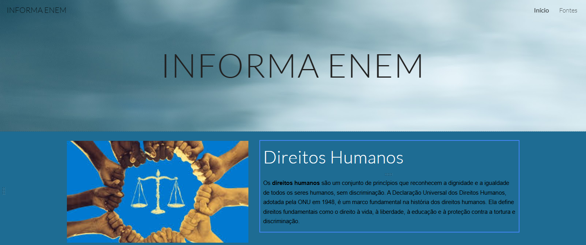
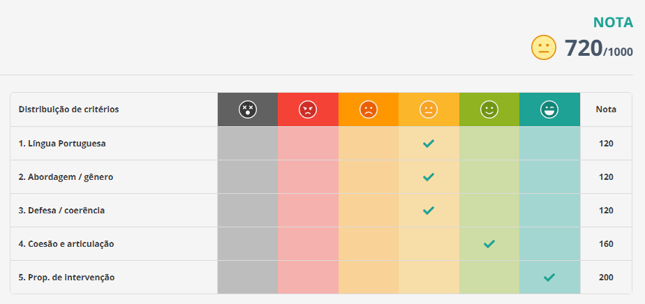
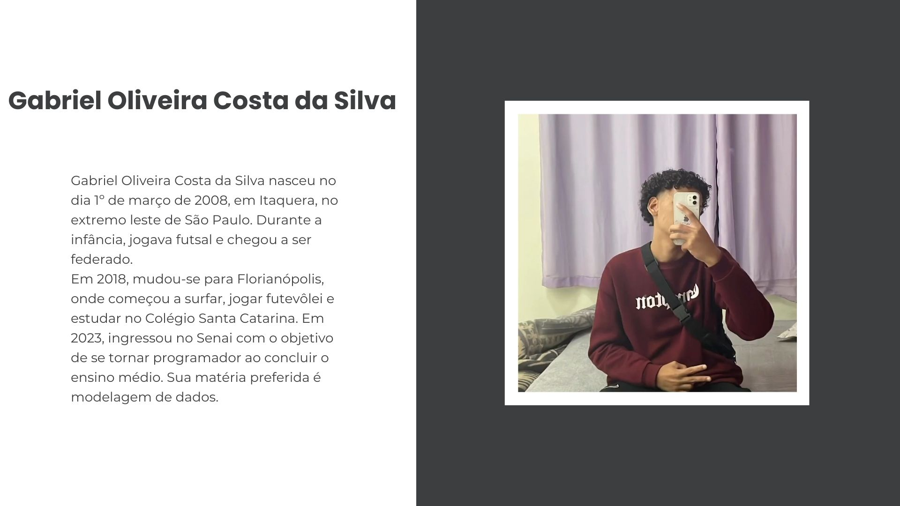
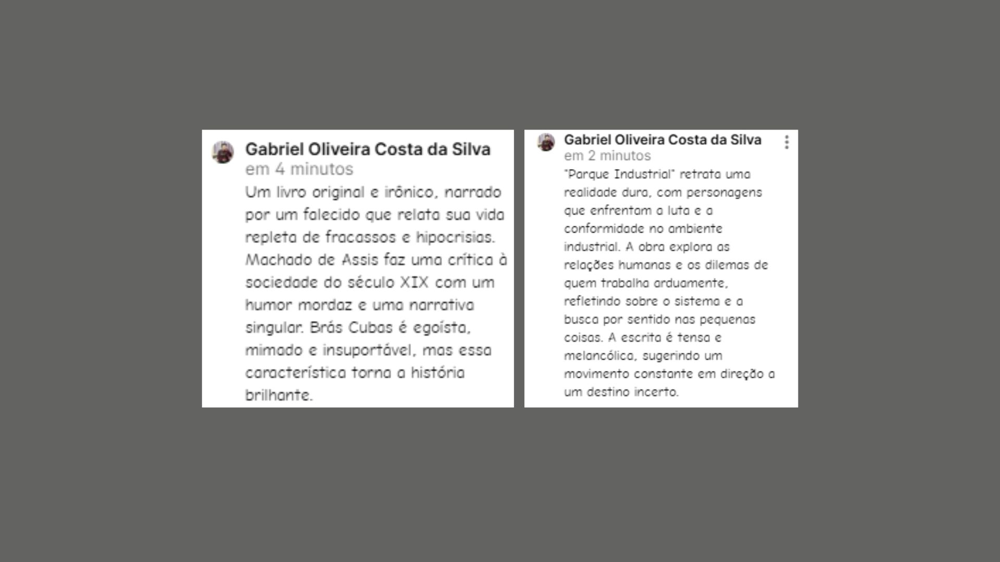
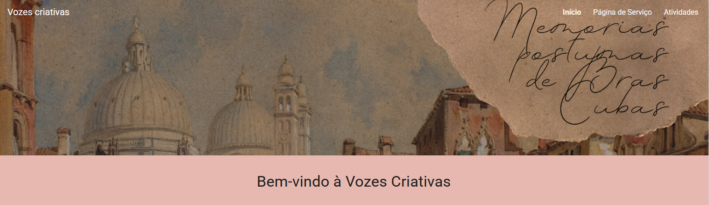
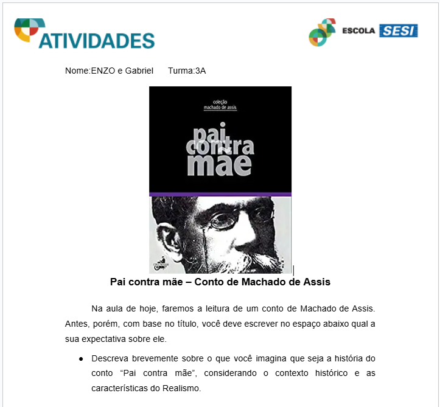

Primerio trimeste

Site Repertório para o Enem
- Objetivo da atividade:
- Criar um site que tenha repertórios que podem ser usados em redações do ENEM
- Assunto:
- Repertório para o Enem
- Crítica pessoal sobre o que foi desenvolvido:
- Gostei da atividade, pois ela ajuda a ampliar o conhecimento dos repertórios para o Enem .
- Habilidades desenvolvidas:
- H23
- Link da atividade
- Acessar atividade

Redação
- Objetivo da atividade:
- Fazer uma Redação estilo ENEM.
- Assunto:
- Desafios para a inclusão social por meio dos esportes no Brasil
- Crítica pessoal sobre o que foi desenvolvido:
- Fazer uma redação sobre "Os desafios de promover inclusão social através do esporte no Brasil" foi desafiador. Conduzi reflexões sobre barreiras como desigualdade e a importância de projetos sociais.
- Habilidades desenvolvidas:
- H6/H8

Biografia
- Objetivo da atividade:
- Criar um texto biográfico que apresente informações fundamentais sobre a própria vida.
- Assunto:
- biografia
- Crítica pessoal sobre o que foi desenvolvido:
- Gostei da atividade, mas foi muito presa a regras. Ficou formal demais - faltou espaço pra mostrar personalidade.
- Habilidades desenvolvidas:
- H6/H8
- Link da atividade
- Acessar atividade

leituras obrigatórias da UFSC
- Objetivo da atividade:
- ler e comentar sobre as leituras obrigatórias da UFSC.
- Assunto:
- Livros Memórias Póstumas de Brás Cubas e Parque Industrial
- Crítica pessoal sobre o que foi desenvolvido:
- Ler esses livros foi uma experiência enriquecedora. "Brás Cubas" me fez refletir sobre a ironia na literatura, enquanto "Parque Industrial" abordou questões relevantes sobre trabalho e alienação.
- Habilidades desenvolvidas:
- H17
- Link da atividade
- Acessar atividade

Revista Literária
- Objetivo da atividade:
- ler e comentar sobre Memórias póstumas de Brás Cubas.
- Assunto:
- Memórias póstumas de Brás Cubas
- Habilidades desenvolvidas:
- H4/H14/H17
- Link da atividade
- Acessar atividade

Pai contra mãe
- Objetivo da atividade:
- ler e comentar sobre a obra Pai contra mãe.
- Assunto:
- Pai contra mãe
- Crítica pessoal sobre o que foi desenvolvido:
- Fazer essa atividade sobre "Pai contra mãe" foi bem interessante. Reescrever a história pela visão da mãe me ajudou a entender melhor os conflitos familiares e as pressões da época. O título realmente captura o embate central.
- Habilidades desenvolvidas:
- H4/H14
- Link da atividade
- Acessar atividade